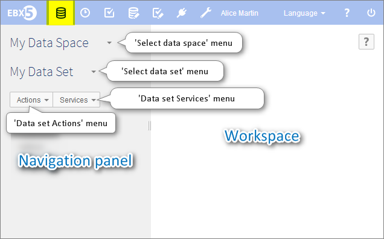

Introduction to data sets
Once a model has been created and published for your reference data, you may want to store and manage your reference data. In order to, you can:
create a new data set in a data space (see creation),
select a data space to work in, a data set to work with, then navigate through groups, tables and fields using the tree view (see actions),
read, add, update or delete records in a data set table (see tables),
access and manage a table by defining custom views and/or hierarchies (see advanced viewing modes),
start working from an existing set of data by copying them (see inheritance),
define who may or may not access some data (see permissions).
A data set corresponds to data displayed as tables or hierarchies, and that can be filtered using multi-criteria views. Access to the content of a data set can be restricted using permissions rules for users and role (that is, a group of users).
For a better understanding of those concepts, feel free to visit our glossary.
Section contents
Data set overview
Access within the interface
To interact with your data, please select Data in the menu bar. Then get started by opening the data space from the top section in the navigation pane.

Users can select a data set using the navigation pane. Two buttons are displayed, the first one allows you to select a data space while the second one allows you to select a data set. Once a data set has been selected, its structure appears in the navigation pane and can be used to select a group or a table. Values held by those elements are displayed in the workspace.
Associated notions and tools
Once in the Data section, you will come across the following notions and tools:
Data space | Data container, whose content can be updated in total isolation from other items close by. |
Data set | Group of data predefined in a data model as having a common use or purpose. |
Tree view | Way to visualize the content of a data set in the navigation pane. |
Target table | Studied table, whose dependencies to others tables we wish to visualize. It is the last and most specific level of the hierarchy, like the leaves of a tree. |
Record | Group of fields forming a unit of information entered by the user in a given data set, appearing as the content of a row in a table. |
Hierarchy | Tree-based representation of a succession of dependencies between tables. It can be balanced, unbalanced, ragged or network. |
Recursive relationship | Occurrence of a dependency link between two entities of the same dimension level. |
Dimension | Possible axe of analysis of a target table, including various dimension levels (as an example: products, families, categories, etc.). |
 User guide table of contents
User guide table of contents